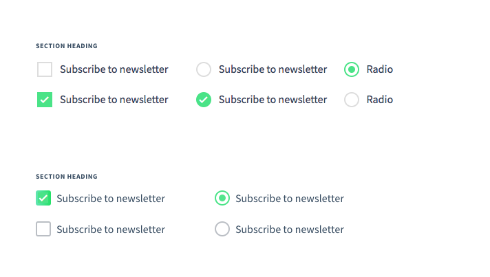

Vuestic Redesign Log
Last update: September 20, 2018.
This document will contain all information about upcoming redesign of Vuestic theme.
Goals & Challenges
- Improve visual style by fixing text styles and elements (such as buttons)
- Add new features for data rich components (tables, graphs, charts)
- Introduce new approach by changing general layout and offer new components
- Make the transition from current version to a new one very smooth
- Deliver new designs to developers in a way not a single minor tweak is ignored
- Check font-weight 600 and 700
- Small font style
- Overall shadows and corners
- General layout
- Add navigation with contents on the left
Possible Components
- Modal views with tabs
- Modal views with Save / Discard
- Modal views with Back / Next
- Data table with actions as icons
- Data table with actions as text
- Data table with different colors (labels, text)
- Data tables with graphs
- Data tables with trends ( ↑ ↓ - )
- Grid with different views (table view, cards)
Contests
- Buttons
- Inputs
- Tabs
- Checkboxes, radio buttons
- Icons
Buttons
The styles were re-worked and several new ones were introduced.
- Buttons sizes were changed: default size became smaller.
- The difference between large/default/small buttons was increased.
- Extra styles introduced: all button sizes with icons, dropdown arrows.
- New style — bordreless button — was added.
Inputs
Inputs were improved taking in consideration three things: 1) optimize space usage; 2) increase contrast when mupltiple inputs are on the form; 3) add missing styles; 4) use rich Material Icons Library as the default source of icons.
- Reduced height allowed to save up to 10% space
- Light gray background makes a single input stand out more
- Thinner bottom border offers lighter & cleaner style
- Consistent icons for inputs. I updated Vuestic icons pack to set default icons. Currently they belong to different sets (Ionic, FontAwesome).
- New styles added: w icons, masks, required inputs.

Input Labels
.old_label
font-size: .6rem
font-weight: 600
color: #4AE387
text-transform: uppercase
letter-spacing: 0
.new_label
font-size: .5rem
font-weight: 700
color: #4AE387
text-transform: uppercase
letter-spacing: 0.0375rem
Tabs
Updated tabs style fits more lightboxes than presentations: it requires way less space than before.

Btw there is a bug with a mobile version of Tabs right now. You can tap 'clear' and remove everything. We should fix it.

Checkboxes, Radio Buttons
Marings were decreased, rounded corners added.
Icons
Basic Vuestic icon pack was improved. It consists of icons that can be used in inputs, tables, etc.
We should also include Google Material Icons to Icons section.
[Icon will be extended with tables controls like Delete, Edit, etc.]